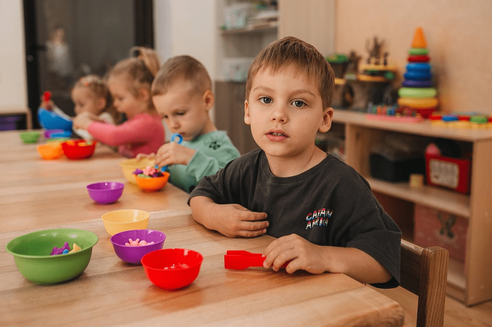
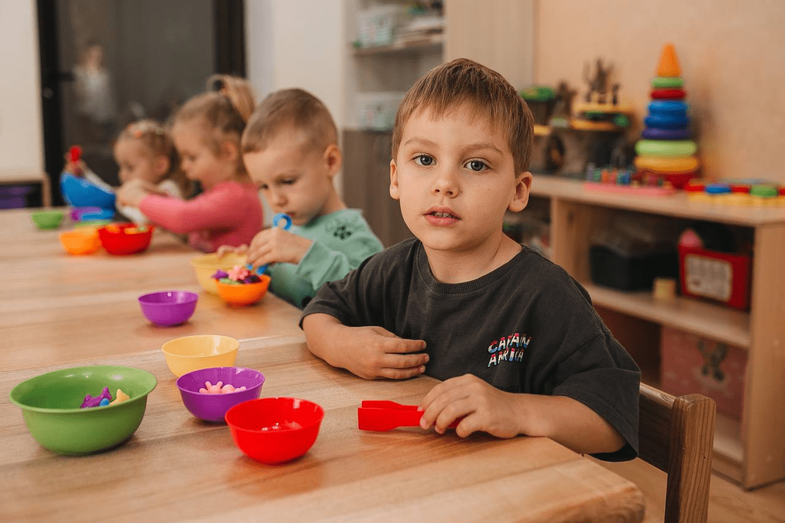

Курс «Мама + Малюк»
Як проходить заняття?
Заняття з курсу «Мама + малюк» складається із блоків, кожен з яких триває близько 5 хвилин. Вправи за столом чергуються з іграми на килимі, музичними та динамічними паузами. Кожна дитина займається разом з мамою або іншим дорослим (татом, нянею, бабусею та ін.). Курс розрахований на 10 місяців навчання.
Записати дитину
Інформація про курс:
- Заняття проводяться двічі на тиждень
- Тривалість заняття - 50хв
- Кількість дітей у групі - 6 - 8 Записати дитину

на заняттях діти:
малюють

ліплять з пластиліну

роблять аплікації
вивчають кольори

виконують вправи на логіку

вивчають щось цікаве

грають з сипучими матеріалами
грають з водичкою
грають з кінетичним піском

розвивають дрібну моторику
вчаться рахувати
проводять досліди
результат навчання
заняття спрямовані на:
- Фізичний розвиток
- Художньо - естетичний розвиток
- Сенсорно - пізнавальний розвиток
- Емоційно - соціальний розвиток
- Мовленнєвий розвиток
- Ігрову діяльність
- Розвиток логічного мислення
досягнення дитини
Діти обожнюють відкривати для себе щось нове. Батьки можуть їх мотивувати!
За умови РЕГУЛЯРНОГО відвідування занять, студенти курсу «МАМА + МАЛЮК» навчаться розрізняти кольори; прості геометричні фігури (коло, трикутник, квадрат);
Під час пальчикових ігор познайомляться з їх назвами; навчаться складати елементарні пазли; познайомляться з голосними звуками (А, О, У, І); навчаться правильно тримати фломастер в ручках. У цьому віці основний наголос ми робимо на розвиток мовлення, уваги та загальної моторики дитини.
Записати дитинуДайте змогу своїй дитині проявити творчі здібності у повній мірі!
Творчий розвиток є невід’ємною частиною занять: малювання (фломастери, фарби); ліплення (пластилін, тісто); знайомство з ножицями, клеєм; елементарні аплікації.
І пам’ятайте, підхід до виконання творчих завдань у кожної дитини індивідуальний та унікальний! Також велику увагу ми приділяємо фізичному розвитку: зарядка; логоритміка; естафети (біг по масажному килимку, проповзання через тунелі, подолання перешкод та ін.), ігри з м’ячами.
Записати дитинугалерея
 
